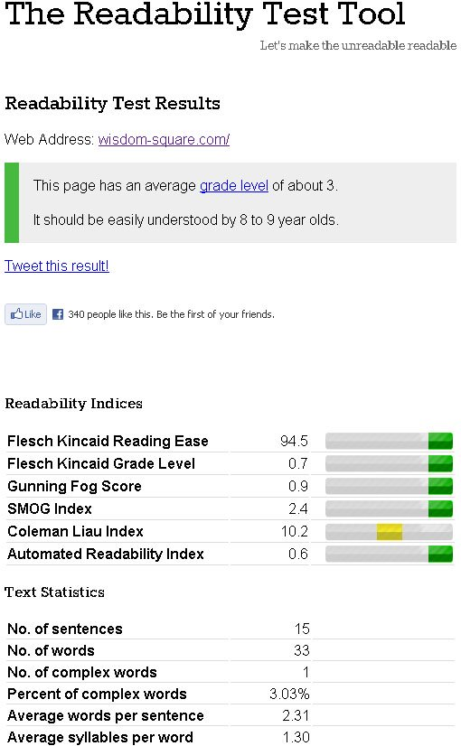

10 Tips for a Blogger's Writing Style
Wisdom-Square › Owning a Business › 10 Tips for a Blogger's Writing Style1. Uniqueness
Online readers have very particular tastes, and if you tailor your articles to your specific niche’s tastes, you will have a far greater success with your blog. Keep in mind that online readers typically browse two pages per visit, spending about 58 seconds on each page. That means each article you write should be around 1,000-1,500 words. However, some of your article posts may certainly be less or more depending on their topic.
2. Simplicity
Content that can’t be found on the Internet is a huge bonus. If you can’t source something from the Internet that is fine, use a book. To be at the forefront of Internet publishing it is essential to always share new information—even if that is old information in other mediums. This obscurity of information makes something very enticing and is what attracts readers.
However, that is not to say that online readers are looking only for a unique take on something well known. Articles derived primarily from pop culture are not popular. Pop culture can of course appear in your writing, but like comedy they it should be secondary to your niche and article topic.
“We were somewhere around Barstow on the edge of the desert when the drugs began to
take hold. I remember saying something like "I feel a bit lightheaded; maybe you should
drive..." And suddenly there was a terrible roar all around us and the sky was full of what
looked like huge bats, all swooping and screeching and diving around the car, which was
going about a hundred miles an hour with the top down to Las Vegas. And a voice was
screaming: "Holy Jesus! What are these goddamn animals?”—Fear and Loathing in Las
Vegas, by Hunter S. Thompson.
Can you guess the Flesch score of the above paragraph taken from one of the greatest books of the twentieth century? It is 84.2. That is the reading level of a twelve-year-old. It doesn’t score high because it uses childish words or phrases; it scores high because it has only as many words as are needed to convey its meaning. You can check out how your text scores by following the steps in this YouTube video to turn the feature on in Microsoft Word 2007. You can also enter web addresses (url's) at this website to check your website's readability as a whole. These were the results for Wisdom Square as of February 28, 2013:

3. Remarkability
Your article needs to be remarkable. If the concept article already exists somewhere else on the Internet… it is not remarkable. Your articles need to turn heads, and excite people because they have never seen it before. Read each article you write and ask yourself: “Would my friends read this and say ‘Wow!’?” If the answer is yes, you probably have a remarkable article.
4. Pronouns
Readers prefer the use of the inclusive “we.” By using “we” as the default pronoun, the readers feels included; as if they are on a learning journey together with the author.
The use of “I” is permitted on occasion but it should be used sparingly as it tends to create a divide between the author and the audience; the aim is to draw people in, not cause division.
The use of “you” is permitted as long as it is not being used to intimidate or talk down to the readers. Here is an example that demonstrates the correct use of pronouns:
Introduction from the Top 10 Gruesome Fairy Tale Origins:
Fairy tales of the past were often full of macabre and gruesome twists and endings. These days, companies like Disney have sanitized them for a modern audience that is clearly deemed unable to cope, and so we see happy endings everywhere. This list looks at some of the common endings we are familiar with – and explains the original gruesome origins. If you know of any others, be sure to mention it in the comments – or if you know of a fairy tale that is just outright gruesome (in its original or modern form), speak up.
5. Facts
Remember, everyone wants to learn something new when they read your articles. An article that just regurgitates facts (even if they aren't common knowledge) can become very dry, but by challenging what your readers believe they know about a specific niche topic, you’re going past stating facts and are now breaking their misconceptions. This is far more interesting.
The more facts you can fit into an article the more popular it is. Please note that facts are not just details—they are interesting pieces of rare information. Facts come before humor always. That doesn't mean you should put jokes at the end of each article, it means precedence must always be given to the facts. Here is an example where the facts are in bold:
Top 10 Poisonous Foods We Love to Eat
First off, a little interesting trivia: in the US, thanks to a US Supreme Court decision in 1893, tomatoes are vegetables. In the rest of the world they are considered to be fruit (or more accurately, a berry). The reason for this decision was a tax on vegetables but not fruit. You may also be interested to know that technically, a tomato is an ovary. The leaves and stems of the tomato plant contain a chemical called “Glycoalkaloid” which causes extreme nervousness and stomach upsets. Despite this, they can be used in cooking to enhance flavor, but they must be removed before eating. Cooking in this way does not allow enough poison to seep out but can make a huge difference in taste. Finally, to enhance the flavor of tomatoes, sprinkle a little sugar on them. Now we just need to workout whether they are “toe-mah-toes” or “toe-may-toes”.
As you can see in this example, a little subtle humor is added at the end of an otherwise relatively-dry entry.
6. Sources
Depending what you’re writing about, it may be important to provide a page of your sources or include them at the bottom of an article. This is not necessary for every article though of course.
7. Humor
Humor is important in blogging, but needs to stem naturally from the main task at hand, which is educating your readers with short facts. Humor should be gentle and witty - think Stephen Fry not Jim Carrey. Here is an example:
Top 10 Gruesome Fairy Tale Origins:
In the original sleeping beauty, the lovely princess is put to sleep when she pricks her finger on a spindle. She sleeps for one hundred years when a prince finally arrives, kisses her, and awakens her. They fall in love, marry, and (surprise surprise) live happily ever after. But alas, the original tale is not so sweet (in fact, you have to read this to believe it.) In the original, the young woman is put to sleep because of a prophesy, rather than a curse. And it isn’t the kiss of a prince which wakes her up: the king seeing her asleep, and rather fancying having a bit, rapes her. After nine months she gives birth to two children (while she is still asleep). One of the children sucks her finger which removes the piece of flax which was keeping her asleep. She wakes up to find herself raped and the mother of two kids.
8. Author’s Voice
A unique author’s voice is an excellent way to create your “brand.” Just remember that first and foremost the readers should feel you are credible and trustworthy. You don’t need to write like you are writing an essay, but you should maintain a high standard.
9. Profanity
Do not use profanity, unless it is part of a genuinely sourced quote or the title of something published. In general, use em-dashes to obscure parts of the profane words.
10. Demographics
10% of online readers are under 18
50% are between 18 and 34
40% are over 34
Lastly, please make sure you read, re-read, and re-read before posting your article to the web. Spelling mistakes and basic grammatical errors are usually cleared up if you do two revisions.
Wisdom-Square › Owning a Business › 10 Tips for a Blogger's Writing Style